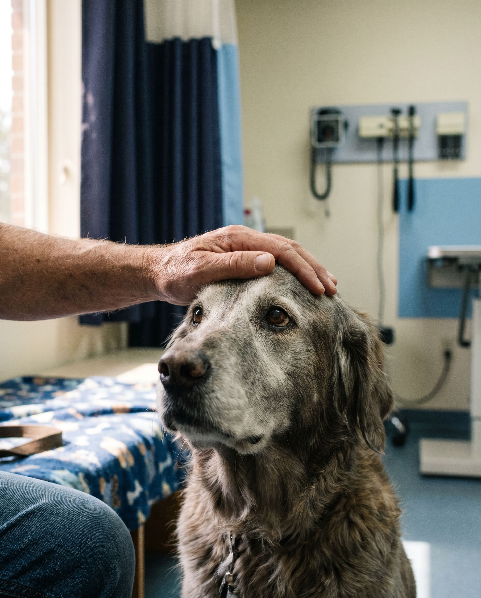

Independently & locally owned
We're not part of a corporate chain. We're your neighbors, independently owned by veterinarians who live and work in this community. Every decision here is made with your pet in mind, not a quarterly report.
When your pet needs help and it's the middle of the night, a weekend, or a holiday, you shouldn't have to choose between quality care and being treated like family. We're here. Independently owned, locally rooted, and ready.

Maybe your dog stopped eating. Maybe your cat is acting strange and your gut is telling you something is wrong. Maybe it's 11 PM and your regular vet won't open for another ten hours. Whatever brought you here, take a breath. You found the right place.
For over 40 years, Pet Emergency Center has served families across Fort Lauderdale and South Florida as an independently owned emergency veterinary practice. We are not a corporate chain. Decisions here are made by the veterinarians and the people who actually care for your pet, not a boardroom. That's a difference you'll feel the moment you call.
Led by Dr. Seth Kiser, our team is known for something you don't always find in emergency medicine: a calm presence, honest answers, and a willingness to build a treatment plan around your pet and your real life. No judgment. No upselling. No hidden fees.
No appointment needed. If you're not sure whether it's an emergency, book a $75 telehealth consultation and we'll help you figure it out from home.
We'll explain what we're seeing in plain language and walk you through a clear, transparent estimate before we proceed, so there are no financial surprises.
We treat your pet like family and keep you informed the whole way. When follow-up is needed, we coordinate directly with your regular veterinarian.
We're not part of a corporate chain. We're your neighbors, independently owned by veterinarians who live and work in this community. Every decision here is made with your pet in mind, not a quarterly report.
Emergency bills shouldn't be a surprise. We walk you through costs before we proceed, and we work with families to find solutions that fit their situation. Many of our clients first came to us after leaving a more expensive hospital, and stayed.
Dr. Kiser is known for building treatment plans around what your household can realistically manage. If you can't medicate your cat at home, we'll find another way. That kind of thinking is rare. It's also how we practice, every shift.
When your pet is in crisis, you shouldn't have to wait three days for medication to ship. Our in-house pharmacy lets us dispense what your pet needs the same visit.
Led by Dr. Seth Kiser, our emergency veterinarians and technicians have cared for pets across Broward, Palm Beach, and Miami-Dade counties for decades. When things get chaotic, we stay steady, so you can, too.
From minor urgent issues to life-threatening emergencies, our team is equipped to stabilize, diagnose, and treat your pet any time we're open.
Learn moreOn-site surgical capabilities for wound repair, foreign body removal, and other urgent procedures, performed by veterinarians experienced in emergency medicine.
Learn moreBook a $75 video consultation from anywhere in Florida. Not sure if it's an emergency? Talk to one of our veterinarians first.
Learn moreCompassionate, effective pain control is part of every treatment plan. We don't just treat the condition. We make sure your pet is comfortable.
Learn moreIn-house blood work, imaging, and diagnostics mean we get answers quickly, so we can act quickly.
Learn moreA fully stocked in-house pharmacy so your pet leaves with the medication they need, not a prescription to fill somewhere else.
Learn moreSometimes you just need a professional to take a look and tell you what to do next. That's what our telehealth consultations are for.
For $75, you can video-chat with one of our veterinarians from anywhere in Florida, whether you're unsure if your pet's symptoms warrant a visit, you can't physically transport your pet right now, or you're outside our Fort Lauderdale service area and need guidance immediately.
South Florida families don't all have the same kind of pet, and we're proud to care for a wide range of species, including many that most emergency hospitals won't see.
For decades, families across Broward, Palm Beach, and Miami-Dade counties have trusted us with their pets. Here's what a few of them want you to know.
"Brought our dog in at 2 AM after she collapsed. The team was calm, explained everything, and walked us through the costs before anything happened. She's back home and wagging her tail. We can't say thank you enough."
"We left a bigger hospital because the estimate was out of reach. Dr. Kiser's team took us in, treated our cat with real care, and never once made us feel like we were being judged. They have a client for life."
"Our parrot had a bad fall on a Saturday night. Every other ER told us they don't see birds. Pet Emergency Center said 'bring him in.' He's fully recovered. There aren't words."
"The telehealth option saved us a trip at 3 AM. They told us honestly it could wait until morning, and gave us things to watch for. That kind of honesty is rare."
From our Fort Lauderdale hospital on East Cypress Creek Road, we serve pet families across Broward, Palm Beach, and Miami-Dade counties.
Anywhere else in Florida? Our telehealth service is available to you.
Can't find what you're looking for? Call (954) 772-0420 or book a telehealth consultation. We're happy to help.
Call us, walk in, or book a telehealth consultation. We'll take it from there.